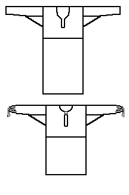

This is not a medieval archaeological pattern, but much later folk designs for a shirt (s�rk) from Raisal�, Finland.
Return to Shirts Page
Some Clothing of the Middle Ages - Shirts - Raisala, by I. Marc Carlson, Copyright 1997 This code is given for the free exchange of information, provided the Author's Name is included in all future revisions, and no money change hands-